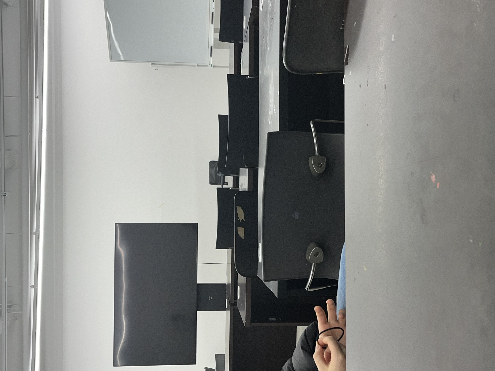
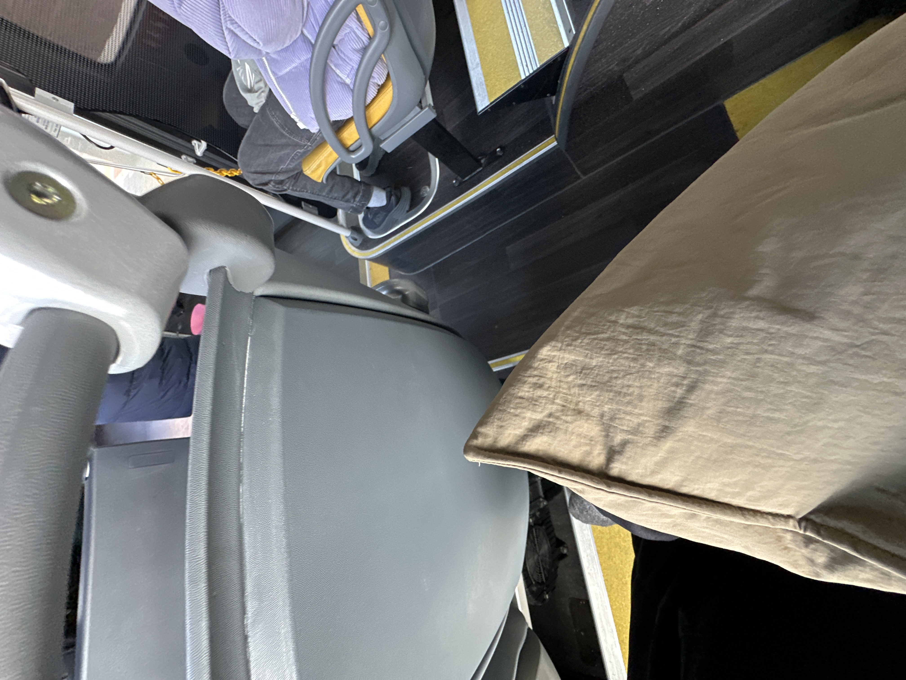
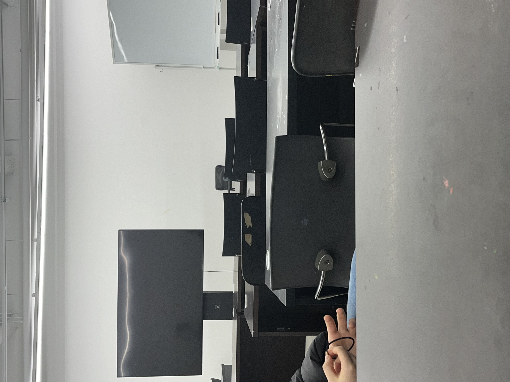
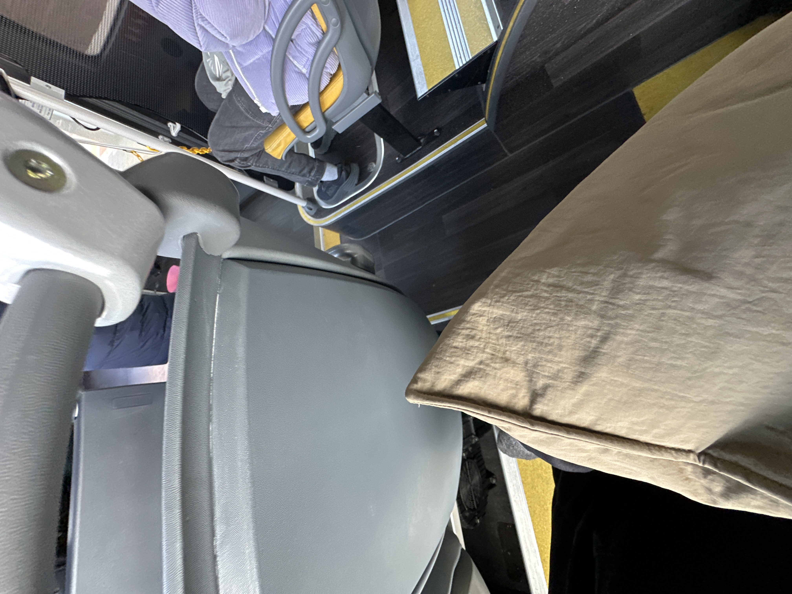

A의 이야기
나는 상황을 풀기 위해 브레이커를 사용했고 대부분의 사람들이 특이한 반응을 보이지 않았다. 생각보다 분위기가 전환되지 않았다
사용한 소리: 하품소리
반응: 나쁨
첨부파일: 오디오, 비디오
2023.12.14 18:55
시디돌이의 이야기
공허한 실기실에 모두가 앉아있었다. 갑자기 조용해진 분위기를 깨기 위해 소리를 재생했다. 옆에 있던 W씨는 깜짝이야 라는 반응을 했다. Q씨는 어땠냐는 나의 질문에 아니별로 라는 조금 독특한 대답을 했다. 옆에있던 S씨는 야스퀸 부분에서 웃음을 터뜨렸다. 전체적으로 분위기가 잘 전환된 것 같다.
사용한 소리: 스크린샷 소리, 심장박동 소리
반응: 나쁨
첨부파일: 오디오, 이미지
2023.12.15 17:05
쭈쭈의 이야기
기사님 포함 3명정도가 타고있는 조용한 전기버스에서 코고는 돌을 눌렀다 모두 깜짝놀라서 나를 쳐다봤다
사용한 소리: 코 고는 소리
반응: 성공적
첨부파일: 텍스트, 이미지
2023.12.16 11:48
위니의 이야기
외부 소리로 분위기를 깼을 때는 주변인들의 시선을 한 몸에 받을 수 있었다. 퀸은 의문의 시선있다면 스크린샷 소리는 다들 익숙한것+너무 빠르게 여러번 찰칵여서 따가운 눈초리를 받았다..
내부 소리는 나에게서 언제든 날 수 있는 자연스러운 소리라 편안하게 들었다. 분위기를 깬다기보다 이어나가는 느낌.
사용한 소리: 야스퀸, 스크린샷 소리, 심장 박동 소리, 한숨 소리, 소화되는 소리
반응: 좋았음
첨부파일: 텍스트
2023.12.16 11:49
분위기 킬러의 이야기
공허한 실기실에 모두가 앉아있었다. 갑자기 조용해진 분위기를 깨기 위해 소리를 재생했다. 옆에 있던 W씨는 깜짝이야 라는 반응을 했다. Q씨는 어땠냐는 나의 질문에 아니별로 라는 조금 독특한 대답을 했다.
옆에있던 S씨는 야스퀸 부분에서 웃음을 터뜨렸다. 전체적으로 분위기가 잘 전환된 것 같다.
사용한 소리: 야스퀸, 천둥소리
반응: 성공적
첨부파일: 텍스트,이미지
2023.12.16 17:00
당나기 보이의 이야기
새벽 5시가 훌쩍 넘은 밤
꿈나라에 가고 싶은 책먹는 여우였지만
애석하게도 그의 바람대로 잠이 오지 않았어요~
자고싶어하는 머리와 거부하는 몸과의 냉전
이 어색한 분위기를 깨고싶었답니다
그냥 자고 싶었어요
외부의 소리를 먼저 들음
이게 뭐지 싶었음
야스퀸을 들을 땐 귀을 의심함. 두 번 더 들음
천둥소리를 들을 땐 놀램
남자의 고함을 들을 땐 찌푸려짐
넷플릭스 소리를 들을 땐 피식함
무자비한 셔터소리를 들을 땐 초조해짐
전체적으로 약간 불쾌했음. 찝찝함
어색한 사람들과의 어색한 상황 속에선 충분히 효과가 있을 거 같다는 생각이 듬
이 소리들은 상당히 황당하고 돌발스러워서
웃겨서 나오는 웃음이든 그게 아닌 가짜 웃음이든
웃음을 만들어내 어색한 상황에서 웃음으로 잠깐 도망칠 좋은 순간을 제공할만 한 거 같음
반면 레알 갑분싸가 될 수도 있을거 같았음...
상상만으로 살짝 아찔했음
혼자 들었음에 안도감을 느낌
오늘 오후에 어색한 사람들을 만나게 되는데 틀어보려함. 어색한 분위기가 어떻게 바뀔지
이 소리들을 들을 때 어떤 반응을 보일지 궁금함
다음으로 내부의 소리를 들음
그냥 우리 몸에서 나는 자연스러운 소리들이었음
앞서 상당히 자극스러운 소리들을
먼저 들어서 그런지
내부의 소리는 크게 감흥이 없었음
처음에 심장 소리를 듣고
아 이건 조용한거겠구나 했는데
마냥 그렇지만은 않았음..
몇몇 드러운 소리도 있었지만
살아가면서 내가 일상적으로 내는 익숙한 소리들이었기에
앞서 들은 소리들에 비해 상대적으로 심리적으로 편했음
아이스브레이킹의 효과만. 결과만. 생각했을 때
외부의 소리는 모 아니면 도
내부의 소리는 도 아니면 개 일 거 같음
일단 나에게 이 주제는 흥미로움. 상당히
10점만점에 8점이나 주도록 하겠음.
나는 주변에 민감함
또한 특히
어색한 사람들과 있을 때의 정적이 꽤 불편함.
어색한 사람들과 맞이해야하는 당연한 어색함이.
정적이 흐르는 순간. 더욱 그 어색함을 직면하고 체감하게되는 느낌이고 남들도 똑같이 그걸 느끼고 있을 생각에 몸이 간지러워짐
그래서 그럴 때 나는 가끔
‘그 혹시 다들 이런 정적 때 무슨 생각하십니까?’
라는 질문으로 침묵을 먼저 깨곤함
정말 궁금하기도하고
불편한 곳을 쑤셔 오히려 편하게 해보자는 정면승부 같은 의도로 던짐
또한 잘 안 풀리더라도 질문 자체가 유별나니까.
반은 가겠지 마음으로 던짐
그럼 주로 들리는 대답은
•아무생각 안 하는데?
•다음에 무슨 말을 하지?
•질문 참 독특하네
였음
질문 이후에 분위기가 어떻게 변했는지는
기억이 나질 않음.
잠이 안 와서 끄적이다 보니
매우 장문이 됐어염
쓰고보니 도움될 내용은 별로 없어보이긴 하지만
알아서 잘 하렴 꼬꼬야 아주 기특하군
사용한 소리: 천둥소리, 넷플릭스 두둥음, 야스퀸, 스크린샷 소리, 남자 소리지르는 소리, 심장박동 소리, 한숨소리, 하품소리, 소화되는 소리, 코 고는 소리
반응: 성공적
첨부파일: 텍스트
2023.12.17 5:00
키무돌의 이야기
카페 창가 석에 앉아서 소리를 깨 봤다. 노트북에 에어팟이 연결되어 있다는 생각에 소리를 크게 틀었는데, 이게 뭐람... 그냥 이 카페에 있는 모든 사람들이 소리를 들었을 것이다... ... 따라서 소리에 집중하기보다 창피함이라는 감정이 크게 느껴졌다.
사용한 소리: 야스퀸
반응: 성공적
첨부파일: 텍스트
2023.12.17 15:43
선배림의 이야기
프린트실에 도착했다. 잘 모르는 선배들이 묵묵히 과제전 준비를 하고 있었다. 우리 앞에 앉으신 분이 조금 피곤해보이셔서 걱정이 되었다. 난 무서워하지 않고 내가 원하는 대로 소리를 재생했다. 야스퀸 소리가 나오는 순간 옆에 있던 choo가 내 폰을 뺐어갔다. 역시 그는 분위기에 너무 잘 휘둘린다. 분위기를 깨기 위해서는 용기가 필요한데 아직 그걸 잘 모르는 것 같다.
어쨌든 소리를 재생한 순간 칼질을 하던 선배 한분이 뒤를 돌아 나를 쳐다봤다. 뒤에 있던 분은 웃음을 참으시는 듯 보였다.
사용한 소리: 야스퀸
반응: 성공적
첨부파일: 텍스트,이미지
2023.12.17 16:57
 


